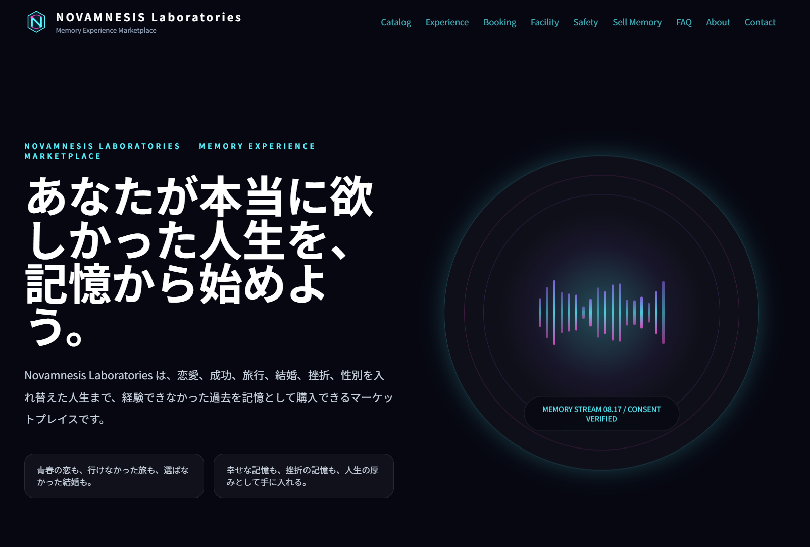
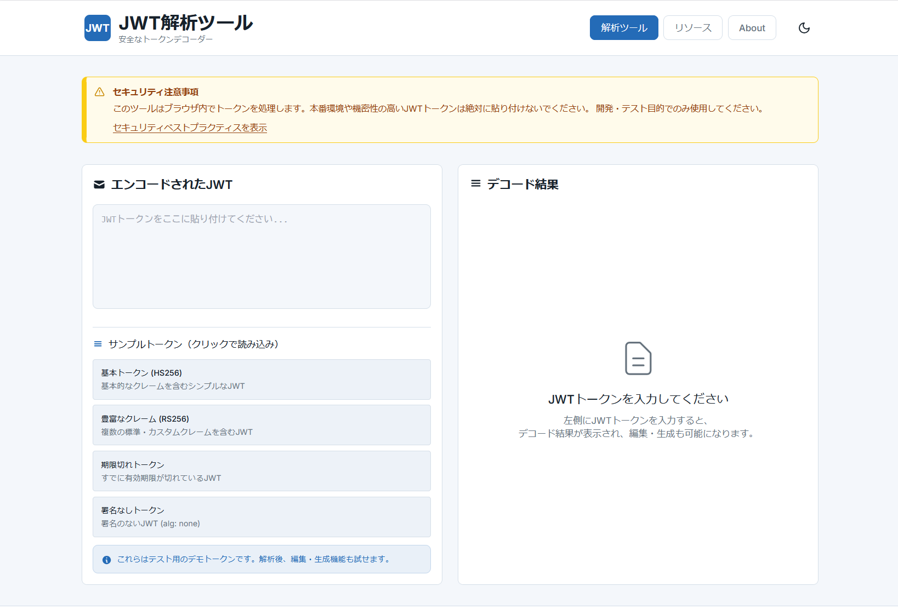
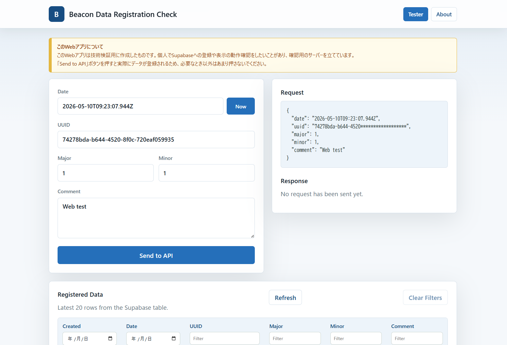
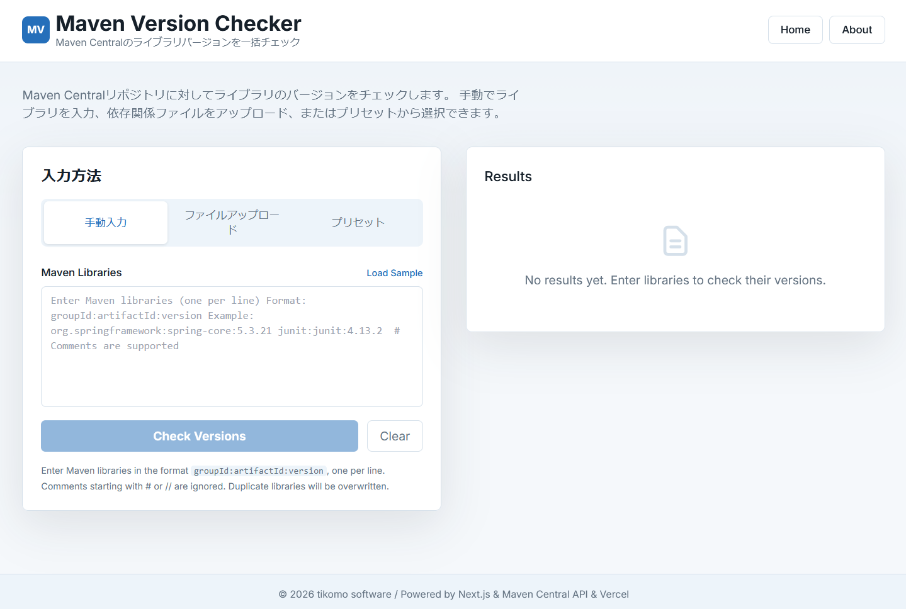
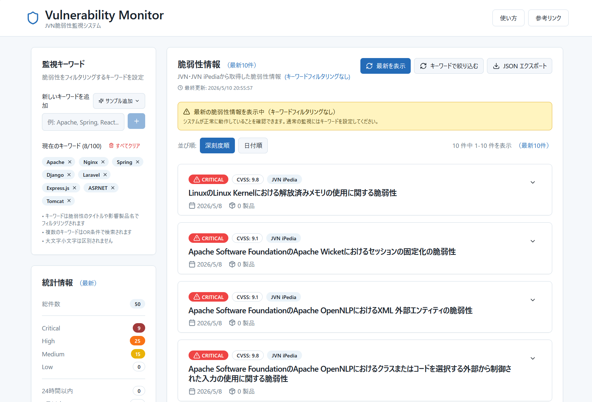

Web Services
Next.js・Hono・Python で開発したWebサービス・Webアプリ一覧です。
NEURAMNESIA
「経験したかった人生を、記憶として購入する」— 架空の近未来記憶体験マーケットプレイスのデモサイト。経験できなかった恋愛、選ばなかった人生、行けなかった旅など、現実では体験できなかった過去を記憶体験として購入できるSF的な世界観を持つダミーWebサイトです。
作成の経緯・開発ストーリーを読む
作成の経緯
何らかのテストに使えるダミーのホームページが欲しかったため、SF的な世界観を持つ架空のサービスサイトとして作成しました。記憶の売買という近未来的なコンセプトを軸に、マーケットプレイス、体験セッション、安全性と倫理など、リアルなサービスサイトとしての体裁を整えています。
AI関係のクレジットが余っていたら更新
AI関係のクレジットが余っていたら、ちょこちょこ更新していこうかなという温度感で作っています。React 19 + TypeScript + Tailwind CSS の構成で、モダンなフロントエンド技術を使った実験的なプロジェクトでもあります。
主な機能・特徴を見る
- 記憶カタログ: 恋愛、成功、旅行、結婚、挫折などの記憶体験テンプレート
- マーケットプレイス: 記憶の購入・売却システム
- 体験セッション: ニューロクラウンを使った記憶定着プロセスの説明
- 安全性と倫理: 現実との境界タグ、同意プロセス、認知安定セッション
- 施設案内: 架空の体験施設のルームゾーン説明
- レスポンシブデザイン: モバイル・タブレット・デスクトップ対応

JWT Analyzer
サーバーにデータを送信することなく、ブラウザ内でJWTトークンを安全に解析・デコード・生成できるWebツール。100%クライアントサイド処理でプライバシーを保護します。
作成の経緯・開発ストーリーを読む
作成の経緯
開発中にJWTの中身を確認したい場面は多いですが、既存のオンラインツールにトークンを貼り付けるのはセキュリティ上のリスクがあります。そこで、完全にクライアントサイドで動作し、トークンが外部に送信されない安全なJWT解析ツールを開発しました。
jwt.io風のUIを目指して
jwt.io のような直感的なレイアウトを参考に、左側に入力・右側にデコード結果を表示するUIを実装しました。JWT解析だけでなく、ヘッダー・ペイロードの編集や新しいJWT生成にも対応しています。
主な機能・特徴を見る
- JWT解析: ヘッダー・ペイロード・署名をリアルタイムでデコード
- JWT生成: HS256 / HS384 / HS512 / none アルゴリズムで新しいJWTを生成
- ヘッダー・ペイロード編集: デコードした内容をJSON形式で直接編集
- サンプルトークン: 基本・豊富なクレーム・期限切れ・署名なしの4種類を用意
- セキュリティ警告: 本番トークン使用に対する組み込み警告とベストプラクティス
- ダーク/ライトモード: テーマ切り替えに対応

Flutter Dependency Audit Web
Flutter / Dart プロジェクト向けの依存パッケージ監査Webアプリケーション。ブラウザから pubspec.yaml と pubspec.lock をアップロードするだけで、セキュリティ脆弱性やアップデートの必要性を自動で監査します。
作成の経緯・開発ストーリーを読む
作成の経緯
Flutterプロジェクトの依存パッケージの状態を手軽に確認したくて開発しました。Flutter SDK環境がなくてもブラウザだけで監査できるので、チームメンバーとの共有にも便利です。
Kiroのspecで作ってみた
Kiroのspec機能を使って要件定義からデザイン、実装タスクまで整理しながら作成しました。Next.js 15 (App Router) + Tailwind CSS 4 の構成です。
主な機能・特徴を見る
- 簡単アップロード: ドラッグ&ドロップで pubspec.yaml / pubspec.lock を解析
- 4カテゴリ分類: Critical Security / Maintenance / Stability / Up to Date で一目瞭然
- pub.dev API連携: 最新バージョン情報とセキュリティアドバイザリを自動取得
- Markdownレポート: 監査結果をワンクリックでダウンロード可能
- プライバシー保護: ファイルはメモリ上でのみ処理、永続保存なし

Web Dependency Audit Web
React, Vue, Next.js, Nuxt, Angular プロジェクト向けの依存パッケージ監査Webアプリケーション。ブラウザから package.json と lockfile をアップロードするだけで、脆弱性スキャンやバージョンチェック、フレームワーク更新情報を自動で監査します。
作成の経緯・開発ストーリーを読む
作成の経緯
Flutter版の成功を受け、同じコンセプトをWebフロントエンド開発にも適用するために開発しました。GitHub Advisory Database APIによる脆弱性検出や、フレームワークのメジャーアップデート検出にも対応しています。
CLI版からWeb版へ
最初はCLI版として作成し、その後Web版に展開しました。コアモジュール（パーサー、チェッカー、カテゴライザー）を共有する構成で開発しています。
主な機能・特徴を見る
- 簡単アップロード: package.json と lockfile をドラッグ&ドロップで解析
- 4カテゴリ分類: Critical Security / Maintenance / Stability / Up to Date で一目瞭然
- 脆弱性スキャン: GitHub Advisory Database API による脆弱性検出
- フレームワーク更新: React, Vue, Next.js 等のメジャーアップデート検出
- Markdownレポート: 監査結果をワンクリックでダウンロード可能
- プライバシー保護: ファイルはメモリ上でのみ処理、永続保存なし

WebSite Life Checker Web
【技術検証版】
本サービスはPython CLI版のWeb移植における技術検証（PoC）として公開しています。本番運用向けではなく、データの永続化や通知機能などは未実装です。
Python版 WebSite Life Checker をWeb化した死活監視ダッシュボード。ブラウザからリアルタイムでWebサイトの稼働状況を確認でき、Vercel Cron Jobsによる5分間隔の自動ヘルスチェックに対応しています。
作成の経緯・開発ストーリーを読む
作成の経緯
CLI版のHealth Monitorは便利でしたが、「PCを開かなくてもスマホからサッと確認したい」という場面が増えてきました。そこで、Next.js + Vercel の構成でWeb版を開発し、どこからでもアクセスできるダッシュボードを実現しました。
CLI版からWeb版への移植
Python版の監視ロジックをTypeScriptに移植し、Vercel Cron Jobsで定期実行する構成にしました。ダッシュボードUIから監視対象の追加・編集もでき、手動チェックもワンクリックで実行可能です。Tailwind CSS v4 を使ったモダンなUIに仕上げています。
主な機能・特徴を見る
- リアルタイムダッシュボード: Webサイトの稼働状況をブラウザで一目で確認
- 自動ヘルスチェック: Vercel Cron Jobsによる5分間隔の定期監視
- 手動チェック: ワンクリックで即座にヘルスチェックを実行
- 監視対象管理: ダッシュボードUIから監視対象を追加・編集可能
- レスポンスタイム計測: 各サイトの応答時間を計測・表示
- チェック履歴: 過去のヘルスチェック結果を履歴として確認

AI FAQ ChatBot（RAG版）
【技術検証版】
本サービスはRAGを使ったFAQチャットボットの技術検証（PoC）として公開しています。RAGデータを調整することで、さまざまなサイトやサービスのFAQ対応に応用できる汎用的な仕組みを目指しています。
RAG（検索拡張生成）ベースのAI FAQチャットボット。事前にベクトル化したFAQデータに対してコサイン類似度で検索を行い、Hugging FaceのLLMでユーザーの質問に最適な回答を生成します。
作成の経緯・開発ストーリーを読む
作成の経緯
以前作成していたチャットボットが、使用していたAIサービスの変更によりモデルが動かなくなってしまいました。せっかくなのでRAGデータを入れ替えて、別のWebサービスとして作り直すことにしました。
ベクトルDBもRAGデータ作成もAIに任せれば怖くない
ベクトルデータベースの構築やRAGデータの作成は、自力でやろうとすると知識がないとかなりキビしい領域です。しかしAIを使えばそのあたりの懸念はほぼ考えなくてよく、指示するだけで進められるので本当に楽です。当初はChromaDBをベクトルDBとして使用する予定でしたが、Vercelのサーバーレス環境ではChromaDB（SQLiteベース）が動作しないため、JSONファイルベースのインメモリベクトル検索方式を採用しています。
主な機能・特徴を見る
- RAG搭載: インメモリベクトル検索で、登録データに基づいた高精度な回答
- セマンティック検索: キーワード一致ではなく、コサイン類似度による自然言語検索
- 多言語Embedding: paraphrase-multilingual-MiniLM-L12-v2で日本語に対応
- 高速レスポンス: Vercelサーバーレス環境での快適な応答
- 無料運用: Hugging Face Inference API（無料枠）を活用

AI FAQ ChatBot（ReAct版）
【技術検証版】
本プロジェクトは技術検証・学習目的のデモアプリケーションです。ワンダーランド東京は架空のテーマパークです。従来の単純なRAG方式から進化し、AIが質問を分析→検索→評価→再検索のサイクルを繰り返すことで、複雑な質問にも対応できます。
ReAct（Reasoning + Acting）パターンに基づく多段階推論AIチャットボット。架空のテーマパーク「ワンダーランド東京」のFAQ情報を学習データとして、来訪者の質問に対して段階的に情報を収集・推論し、正確な回答を生成します。
作成の経緯・開発ストーリーを読む
作成の経緯
上記のAI FAQ ChatBot（RAG版）をベースに、より高度な推論能力を持つReActパターンを導入した進化版です。単純なRAGでは1回の検索で回答を生成していましたが、ReAct版ではAIが「思考→検索→観察」のサイクルを最大3回繰り返し、複雑な質問にも段階的に情報を収集して正確な回答を生成します。
主な機能・特徴を見る
- ReAct推論: 思考→検索→観察のサイクルを最大3回繰り返す多段階推論
- 質問分析: 意図分類・複雑度判定・サブクエリ分解による高精度な質問理解
- LLMプロバイダー切り替え: Hugging Face / Groq / OpenRouter を環境変数で切り替え可能
- LLMプロバイダー比較: 各プロバイダーの推論品質・速度・確信度を並列比較
- 音声入力: Web Speech APIによるマイク入力に対応
- レスポンシブデザイン: モバイル・タブレット・デスクトップに対応

Dummy REST API
開発者がテスト目的で使用できる、ダミーREST APIエンドポイントを提供するWebサービス。Honoフレームワークで構築され、Vercelにサーバーレスデプロイされています。
作成の経緯・開発ストーリーを読む
作成の経緯
フロントエンド開発やAPIクライアントのテスト時に、手軽に使えるダミーAPIが欲しかったため開発しました。JSONPlaceholderのような既存サービスを参考にしつつ、日本語対応や特殊エンドポイント（遅延、ステータスコード）などの機能を追加しています。
Honoフレームワークを試してみたかった
軽量で高速なHonoフレームワークを使ってみたくて、このプロジェクトを作成しました。Vercelへのデプロイも簡単で、サーバーレス環境での運用がスムーズにできています。Swagger UIも統合されているので、APIのドキュメントも自動生成されます。
主な機能・特徴を見る
- 複数のリソースタイプ: ユーザー、投稿、コメント、商品、Todo
- 完全なCRUD操作: GET、POST、PUT、DELETE対応
- ページネーション＆ソート: クエリパラメータでデータ制御
- 特殊エンドポイント: 遅延シミュレーション、ステータスコードテスト、ランダムデータ生成
- Swagger UI: インタラクティブなAPIドキュメント
- バイリンガル: 日本語と英語のエラーメッセージ

UUID生成ツール
シンプルで高速なUUID生成ツール。ボタン一つで5つのUUIDを即座に生成し、ワンクリックでコピーが可能です。Next.js 15を採用したモダンなシングルページアプリケーションです。
作成の経緯・開発ストーリーを読む
作成の経緯
開発作業中にUUIDが必要になる場面が多く、広告がなくシンプルで、なおかつデザインの優れたツールが欲しくて開発しました。「開いてすぐ生成、すぐコピー」という効率性を最優先に設計しています。
Next.js 15 の練習も兼ねて
最新の Next.js 15 (App Router) を使って、どこまでシンプルかつプレミアムな質感のツールが作れるか試してみました。Vanilla CSS でのグラスモフィズム（透かし）デザインの採用など、見た目にもこだわっています。
主な機能・特徴を見る
- ワンクリック生成: 瞬時に5つのUUIDを生成
- 簡単コピー: 視覚的なフィードバック付きのコピー機能
- モダンデザイン: ガラスのような透明感のある美しいUI
- 高速ロード: サーバーレスデプロイによる爆速なレスポンス

BeaconInfoStock
【技術検証版】
本サービスはiBeaconデータのAPI登録とSupabase連携の技術検証（PoC）として公開しています。
iBeacon形式のデータをNext.js API Route経由でSupabaseに登録し、登録済みデータを画面上で確認するWebアプリ。Vercel Cron Jobsによる1日1回の自動ライフチェックにも対応しています。
作成の経緯・開発ストーリーを読む
作成の経緯
iBeaconスキャナーアプリで取得したビーコンデータをクラウドに蓄積・確認したいというニーズから開発しました。Next.js API RouteとSupabaseを組み合わせることで、サーバーレスなデータ登録・参照の仕組みを検証しています。
Supabase Free Planの維持対策も兼ねて
Supabase Free Planはアクティビティが低いとプロジェクトが一時停止されます。Vercel Cron Jobsで毎日1回ライフチェック用のデータを書き込むことで、プロジェクトの停止を防ぐ仕組みも組み込んでいます。
主な機能・特徴を見る
- iBeaconデータ登録: UUID・Major・Minor・コメントをフォームからAPI経由でSupabaseに登録
- 登録データ一覧: Supabaseテーブルの最新データをリアルタイムで表示
- フィルタリング: テーブルヘッダーと日付カレンダーによるデータ絞り込み
- UUIDマスク表示: セキュリティ配慮のためUUID後半を自動マスク
- 自動ライフチェック: Vercel Cron Jobsによる1日1回のSupabase死活維持
- APIリクエスト確認: リクエスト・レスポンスの内容を画面上で確認可能

Maven Library Checker
Maven Central Repositoryから指定ライブラリの最新バージョンを取得し、更新状況を視覚的に確認できるWebツール。複数ライブラリの一括チェックに対応し、Javaプロジェクトの依存管理を効率化します。
作成の経緯・開発ストーリーを読む
作成の経緯
Javaプロジェクトで使用しているMavenライブラリのバージョンを手軽に確認したくて開発しました。最初はPython CLIツールとして作成し、その後ブラウザから手軽に使えるWeb版に展開しました。
CLI版からWeb版へ
Python CLI版の機能をNext.js + TypeScriptに移植し、Maven Central Repository APIと連携するWebアプリとして再構築しました。環境構築不要でブラウザからすぐに使えるのが利点です。
主な機能・特徴を見る
- バージョン検索: Maven Central Repositoryから最新バージョン情報をリアルタイム取得
- 一括チェック: 複数ライブラリを同時にチェック可能
- 更新状況の可視化: 更新あり・変更なし・新規を色分けで一目表示
- groupId:artifactId形式: Maven標準の記法でライブラリを指定
- レスポンシブデザイン: デスクトップ・モバイル対応

Vulnerability Monitor
JVN・JVN iPediaから最新の脆弱性情報を取得し、キーワードベースでフィルタリングして表示するWebアプリケーション。監視したい技術名をキーワードとして登録しておくことで、関連する脆弱性情報を素早く確認できます。
作成の経緯・開発ストーリーを読む
作成の経緯
使用している技術スタックに関連する脆弱性情報を定期的に確認したいというニーズから開発しました。JVN・JVN iPediaのAPIを活用し、キーワードフィルタリングで必要な情報だけを素早く確認できる仕組みを実現しています。
セキュリティ監視の手間を減らしたい
脆弱性情報は日々更新されますが、全件を追うのは現実的ではありません。Apache・Spring・Reactなど使用中の技術名をキーワードとして登録しておくだけで、関連する脆弱性だけを絞り込んで確認できます。キーワードはブラウザのローカルストレージに保存されるため、次回以降もそのまま使えます。
主な機能・特徴を見る
- 脆弱性情報取得: JVN・JVN iPediaから過去30日間の脆弱性情報をリアルタイム取得
- キーワードフィルタリング: 技術名・製品名でOR条件の絞り込み検索
- 深刻度別表示: Critical / High / Medium / Low を色分けで一目表示
- 統計情報: 深刻度別件数・24時間以内・7日以内・30日以内の集計
- JSONエクスポート: フィルタリング結果をJSON形式でダウンロード
- キーワード自動保存: ブラウザのローカルストレージに設定を保持
